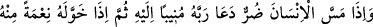
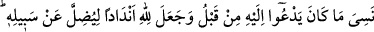
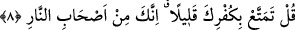
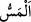
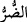
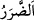

Sa’dî der ki:
Tuttuğun yol Allah’a değil de başka yere gidiyorsa,
Seccadeni ateşte silkeceklerdir
Nazarın Hakk’a doğru değilse,
Kıyamet günü çok âh çekersin
Doğruluk divanının ve adalet terâzisinin bulunduğu yerde
İçi rüzgârla dolu bir dağarcığın ağırlığı ne tutar?
O zaman, vaktiyle bunca takvâ satan mürâînin
Dağarcığında hiçbir şey bulunmadığı meydana çıkar
Riyadan gelecek olan yüzsuyuna yer verme,
Çünkü bu suyun altı balçıktır
Allah bizi de sizi de sözlerinde, fiillerinde ve hallerinde sâlih, sâdık ve ihlâslı
olanlardan kılsın. Fâsık, yalancı ve mürâîlerden eylemesin. Âmîn, ey affı bol, nimeti
çok olan!
8. İnsanın başına bir sıkıntı gelince, Rabbine yönelerek O’na yalvarır. Sonra Allah
kendisinden ona bir nimet verince, önceden yalvarmış olduğunu unutur. Allah’ın
yolundan saptırmak için O’na eşler koşar. (Ey Muhammed!) De ki: Küfrünle biraz
eğlenedur; çünkü sen, muhakkak cehennem ehlindensin!
“İnsanın başına bir sıkıntı gelince,” fakirlik, hastalık ve bunlardan başka kötü bir hal
ve sıkıntı isâbet edince “Rabbine yönelerek” genişlik zamanında duâ edip yalvardığı
kendisi gibi âciz put ve diğer şeylerin sıkıntısını giderme gücünden mahrum olduklarını
bildiğinden Rabbine dönerek, o sıkıntının giderilmesi hususunda “O’na yalvarır.”
Râğıb der ki: “
” kelimesi, insana erişen her tür eziyet için kullanılır. “
(sıkıntı)” kelimesi “
(bolluk)” ve “
(iyilik/ nimet içinde olma)”nın zıddıdır. “
(zarar)” ise “
(fayda)”in karşıtıdır.
“
” tevbe ile ve ameli hâlis kılarak Allah’a dönmektir. “
” bir şeyin tekrar
tekrar dönmesi demektir.
Bu âyette ifâde edilen husus, “İnsan gerçekten çok zâlim ve nankördür” (İbrâhim,
14/34) âyetinde olduğu gibi bir cinsin (insan), bir kısım ferdlerinin durumu ile tavsif
edilmesinden ibârettir.
Bu âyette işâret vardır ki insana bir sıkıntı dokunduğu zaman boyun eğmesi, itâat